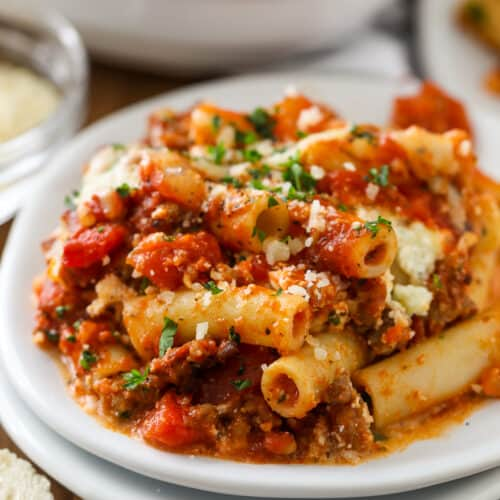

Baked Ziti

Description
Learn the secrets to making the most amazing Baked Ziti with this
step-by-step, easy to follow recipe. Ingredients have been carefully
choosen to create a symphony of flavors that will make your tastebuds
dance with delight.
Ingredients
- 16 ounces Ziti
- 28 ounces Pasta sauce
- 16 ounces Ricotta cheese
- 1 cup Mozzarella cheese
- 1 cup Parmesan cheese
Instructions
- Preheat oven to 375 degrees farenheit
- Cook 16 ounces of ziti al dente
- Coat a thin layer of sauce on the bottom of a 9x13 pan
- Add pasta evenly to the pan
- Evenly pour the rest of sauce over the pasta
- Add ricotta chunks to pasta
- Top pasta with mozzarella and parmesan
- Place in oven and bake for 25-30 minutes or until cheese is melted